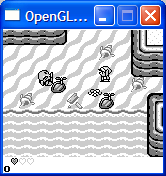

Gameboy:
This section of the site is dedicated to gameboy emulation. I will explain everything thats involved with emulating this system here. My own emulator has about 95% compatibility but with no sound.
Download:
If you want to take a look at the current state of my emulator you can download the sourcode from here.Feel free to use the code as long as credit is given to me. The source code compiles under visual studio under windows and linux using codeblocks. This version of my gameboy emulator has none of the nicities like a GUI or memory dumping. To run a game you have to change the filename in Gameboy.cpp and recompile it, but remember to use this source code and to play games you must actually own a gameboy and the games you're emulating (I am not supplying any ROMs or supplying links to them)). It is illegal to do otherwise and I will take no responsibility for you doing so. Enjoy
Resources:
The resources you will need are here. I managed to complete this project using just these two documents:
- GB.pdf Contains all opcodes and covers all material related to the Gameboy
- PanDocs Same as above without the opcodes but more accurate info
Use the navigation menu to the right of the screen to begin.
Screenshots:
Here are some screenshots of my emulator in action:
